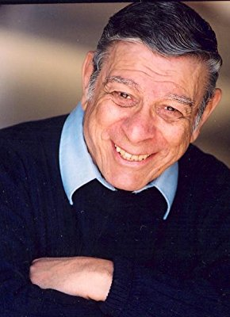

#7612 Achterbahn
Alternativ: Rollercoaster


 IMDB-Wertung: 6.2 / 10
IMDB-Wertung: 6.2 / 10  Metascore: 0
Metascore: 0 
Ein Achterbahnunglück in einem Vergnügungspark, bei dem ein vollbesetzter Zug in rasender Fahrt aus einer Kurve in die Zuschauermenge schießt, erweist sich als ein Sabotageakt, dem wenig später weitere Anschläge in anderen Parks folgen. Bei ersten Ermittlungen kommt der mit der Untersuchung beauftragte technische Inspektor Harry Calder einem Erpresser auf die Spur, der von den Betreibern der betroffenen Vergnügungsparks eine Million Dollar erpressen will.
Jahr: 1977
Dauer: 118 Minuten
FSK: 12
Land: USA Studio: Universal PicturesTonspuren:
Untertitel: Deutsch, Englisch,
Auflösung: 1080p (1920x816) Größe: 9553 MB
Genre: Action, Thriller, Drama, Krimi
Regisseur: James Goldstone
Drehbuch: Sanford Sheldon
Soundtrack: Ron Mael
Darsteller:
 George Segal als Harry Calder
George Segal als Harry Calder Richard Widmark als Hoyt
Richard Widmark als Hoyt Timothy Bottoms als Young Man
Timothy Bottoms als Young Man Henry Fonda als Simon Davenport
Henry Fonda als Simon Davenport Harry Guardino als Keefer
Harry Guardino als Keefer- Susan Strasberg als Fran
 Helen Hunt als Tracy Calder
Helen Hunt als Tracy Calder- Dorothy Tristan als Helen
 Michael Bell als Demerest
Michael Bell als Demerest Craig Wasson als Hippie Boy
Craig Wasson als Hippie Boy William Prince als Quinlan
William Prince als Quinlan- Quinn K. Redeker als Owner #2
 Harry Basch als Owner #3
Harry Basch als Owner #3- Arthur Peterson als Owner #4
- Robert Quarry als Mayor
- Jean Rasey als Girl in Line
- Greg Elliot als Boy in Line
- Bruce Kimball als Bomb Squad #1
 Bruce French als Bomb Squad #2
Bruce French als Bomb Squad #2 Stephen Mendillo als Bomb Squad #3
Stephen Mendillo als Bomb Squad #3 Larry Holt als Bomb Squad #4
Larry Holt als Bomb Squad #4- Monica Lewis als Tourist Mother
- Joe George als Guard
- Michael Airington als Man 1 , uncredited
- Cathi Peyton Erman als Ring Toss Girl , uncredited
 Steve Guttenberg als Messenger , uncredited
Steve Guttenberg als Messenger , uncredited-  Simon Prescott als Supporting , uncredited
 Branscombe Richmond als Minor Role , uncredited
Branscombe Richmond als Minor Role , uncredited- Justine Visone als Strasberg's Girlfriend , uncredited
- Harry Davis als Benny
 Stephen Pearlman als Lyons
Stephen Pearlman als Lyons- G.F. Rowe als Wayne Moore
- Wayne Tippit als Christie
- Charlie Tuna als Rock Concert M.C.
- Lonny Stevens als Federal Agent #1
- Tom Baker als Federal Agent #2
- Ava Readdy als Hippie Girl
- Dick McGarvin als Owner #1
- Richard Altman als Mandell
- Gloria Calomee als Jackie
- Gene Tyburn als Bomb Squad #5
- Bill Sorrells als Selby
- Dick Wesson als Tourist Father
- Gary Franklin als Radio Reporter
- Dave Milton als Man in Robe
- David Byrd als Pet Store Owner
- Henry Olek als Smoking Technician
- Dennis Speigel als Pierce
 Bill Saito als Asian Man
Bill Saito als Asian Man- Takayo Doran als Asian Woman
Datei: X:\1977\Achterbahn (1977, FSK12, 1920x816).mkv seit 29.11.2017
Festplatte: HD 1971-1979
 Es gibt insgesamt 33 Filme in der Gruppe '1977'
Es gibt insgesamt 33 Filme in der Gruppe '1977'